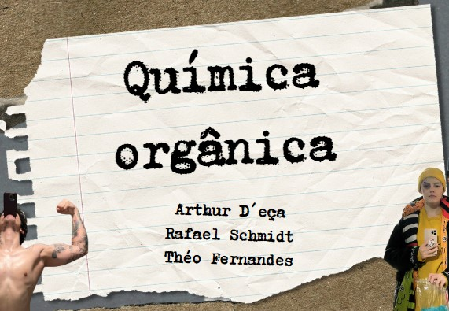
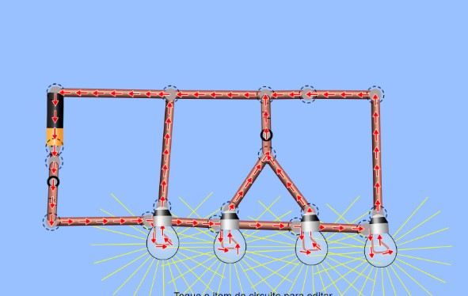

Atividade prática de resistores
 LINK
LINK
Hablidades desenvolvidas: ????
Ojetivo da atividade: O objetivo desta atividade prática é permitir que os alunos compreendam e experimentem as diferenças entre circuitos de resistores em série e em paralelo, explorando como a resistência total é afetada em cada configuração.
Assunto: PRÁTICA SOBRE CIRCUITOS
Comentário pessoal: Eu gostei muito dessa atividade, bem prática e criativa para "sair" só do papel, foi interessante e emocionante quando conseguimos ligar o led kkkkk
Meme sobre evolucionismo

Hablidades desenvolvidas: C2 e H11
Ojetivo da atividade: Mostrar que entendeu a máteria de uma forma divertida.
Assunto: EVOLUCIONISMO
Comentário pessoal: Eu gostei muito dessa atividade também, não apresentou muita dificuldade mas fez ter que usar um pouco a criatividade e o que entendeu da matéria para fazer.
Meme sobre evolucionismo
Hablidades desenvolvidas: C1, H3, H4 e H5.
Ojetivo da atividade: Fazer uma apresentação de estudos com QUÍMICA ORGÂNICA.
Assunto: REVISÃO ORGÂNICA
Comentário pessoal: Mais uma atividade em formato de apresentação, é uma boa tática para aprender mas infelizmente já é um formato muito repetido. Porém consegui aprender bastante fazendo esse trabalho.
Circuitos
Hablidades desenvolvidas: C2 e H6.
Ojetivo da atividade: Realizar o procedimento do simulador, escrevendo um relatório técnico, com fotos e esquemas, sobre a situação trabalhada.
Assunto: Circuitos
Comentário pessoal: Achei legal usar o simulador para fazer a fiação, lembro de ter entendido toda a matéria só usando ele.